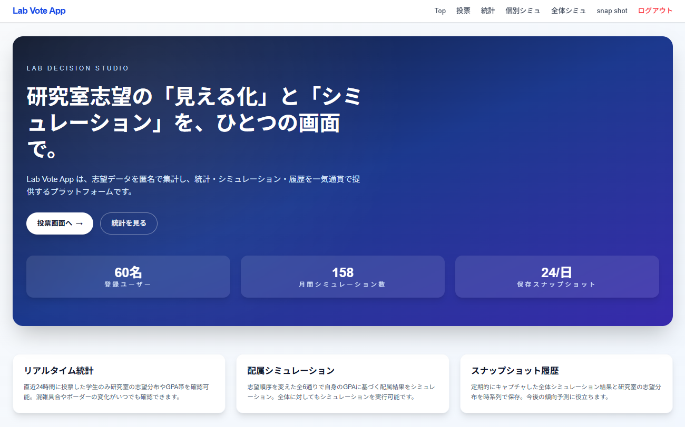
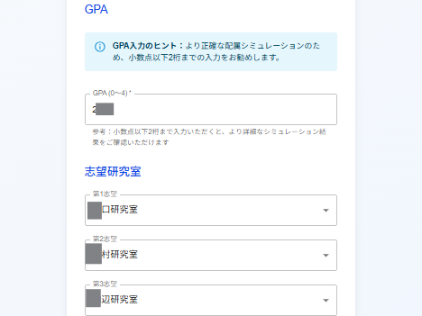
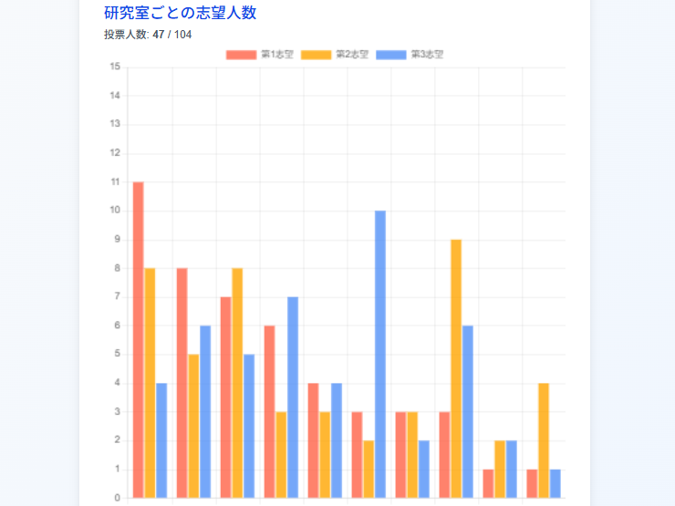
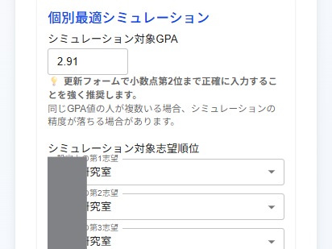
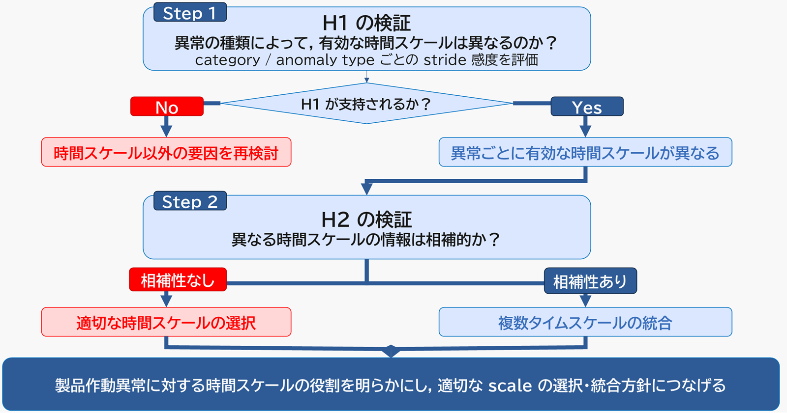
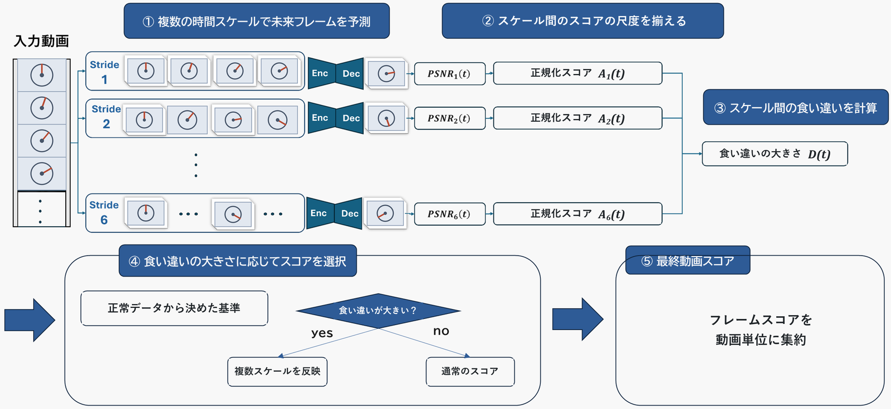
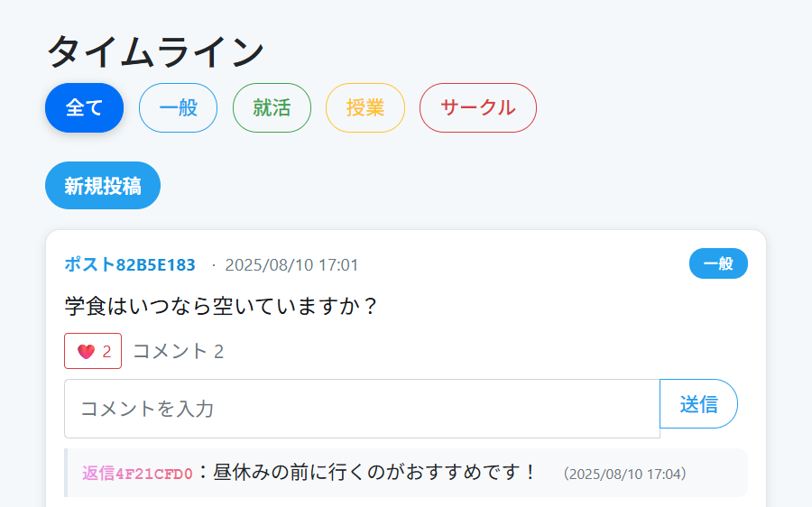

lab-vote-app
研究室配属の志望状況を匿名で集計し、配属結果をシミュレーションできる学科向け Web アプリ。企画・設計・実装・デプロイから学科内での周知まで一人で担当し、対象学生 104 人のうち 60 人が登録した。
投票した人だけが集計結果とシミュレーションを見られる設計にして、参加を促した。




製品作動動画の異常検知における時間スケールの役割
Phys-AD（CVPR 2025）は、外観は正常でも作動が不自然な製品を、正常動画だけの学習で検出する 22 カテゴリの動画データセットである。本研究は、未来フレームの予測誤差を異常スコアとする手法を基盤に、予測するフレーム間隔（stride）、つまり時間スケールが検出性能をどう左右するかを調べている。
異常の種類によって、有効な時間スケールは変わるのか？
既存手法の再現から課題を見つけ、時間スケールの影響を検証。その知見をもとに、TDBAD を考案・評価した。
研究室の先行手法 Multi-Mah（複数 stride の MNAD スコアを統合する手法）を再現し、22 カテゴリ平均 AUROC 87.74% を得た。これは先行手法の再現値であり、自身の手法の成果ではない。再現を通じて、この性能が stride の違い・複数モデルのアンサンブル・スコア統合のどれによるものか切り分けられていないことに気づき、時間スケールそのものを検証対象にした。

Memory モジュールの影響を除くため、予測誤差だけを異常スコアとする単純な Encoder–Decoder を構成し、stride 1〜10 を同じ条件で比較した。

平均では stride 7 の 88.1% が最高だったが、最適な stride はカテゴリごとに大きく異なり、gear や lock では AUROC が 65pt 以上変動した。H1 と整合する結果である。たとえば lock の「詰まり」は、stride 1 では停止した状態まで予測できて誤差が出にくい一方、stride 5 では正常な動作との差が誤差に現れた。ただし、学習 seed によるばらつきとの切り分けは終わっておらず、H1 の検証は継続中である。
Temporal Discrepancy-Based Anomaly Detection. stride 間でスコアが大きく食い違うフレームでは、一部の時間スケールだけが異常を捉えている可能性がある。そこで、stride 1〜6 のスコアを正常データを基準に同じ尺度へ揃え、食い違いの大きさに応じてフレームごとに参照するスコアを切り替える手法を考案・実装した。

スコア算出方法の比較（同一の予測モデル、22 カテゴリ平均 AUROC、学習 seed 1 回分。図2 とは学習設定が異なる）
固定 stride 5 に対して +0.85pt。改善は lock（+6.7pt）や button（+7.0pt）など一部のカテゴリに集中しており、学習 seed を変えた 3 回の評価でも同じ向きだった。
今後は、seed の影響を切り分けた H1 の検証、手法の性能とは独立した H2 の検証、テスト情報を使わない設定の決め方、他手法との条件を揃えた比較に取り組む。
研究室配属の志望状況を匿名で集計し、配属結果をシミュレーションできる学科向け Web アプリ。企画・設計・実装・デプロイから学科内での周知まで一人で担当し、対象学生 104 人のうち 60 人が登録した。
投票した人だけが集計結果とシミュレーションを見られる設計にして、参加を促した。




学内の悩みを、立場や交友関係に縛られず匿名で相談できる投稿アプリ。チームでニーズを整理して問題設定に落とし込み、UniChat をベースに匿名投稿・コメント・リアクション・チャンネル機能を実装した。

AI 面接プロダクトの AI 機能の開発・改善に従事。技術調査、モデルの評価・改善、データ整備、実装、API 設計などに取り組んでいます。
社内向け画像アノテーションツールのチーム開発で、フロントエンドと矩形判定アルゴリズムを担当。
地理データ・台帳データの前処理。表記ゆれや例外を含む実データの整形と確認を担当。
電子カルテの処方薬剤から傷病名の候補を推定するナイーブベイズモデルを実装し、入力補助として確率順に提示する仕組みを構築。
学内 IT サービスの問い合わせ対応と、Power Automate による定常業務の自動化。